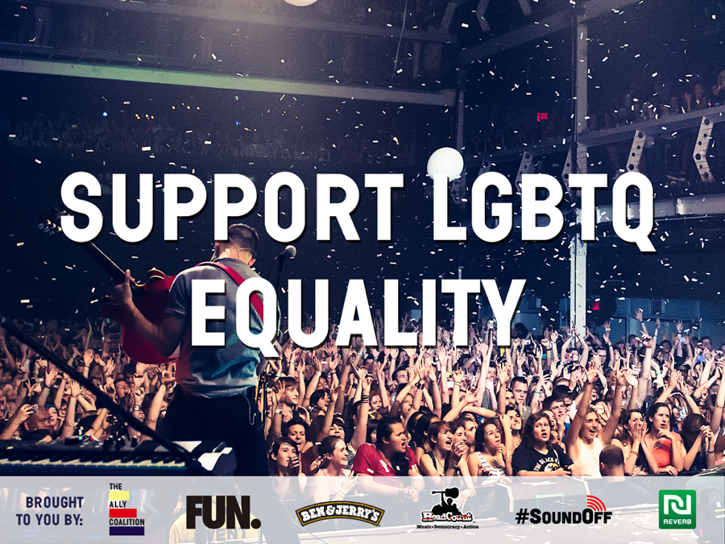
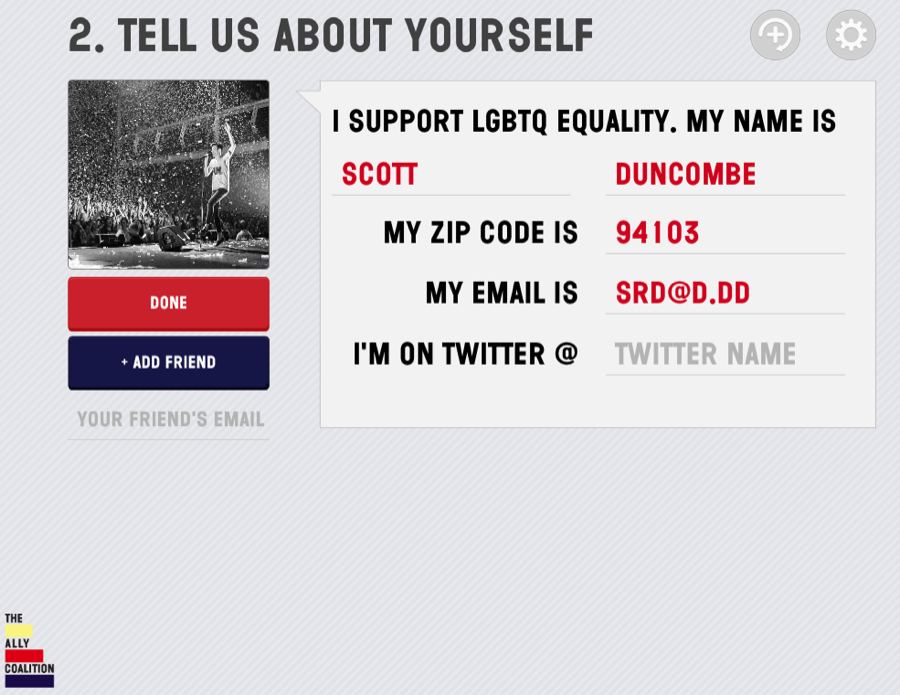
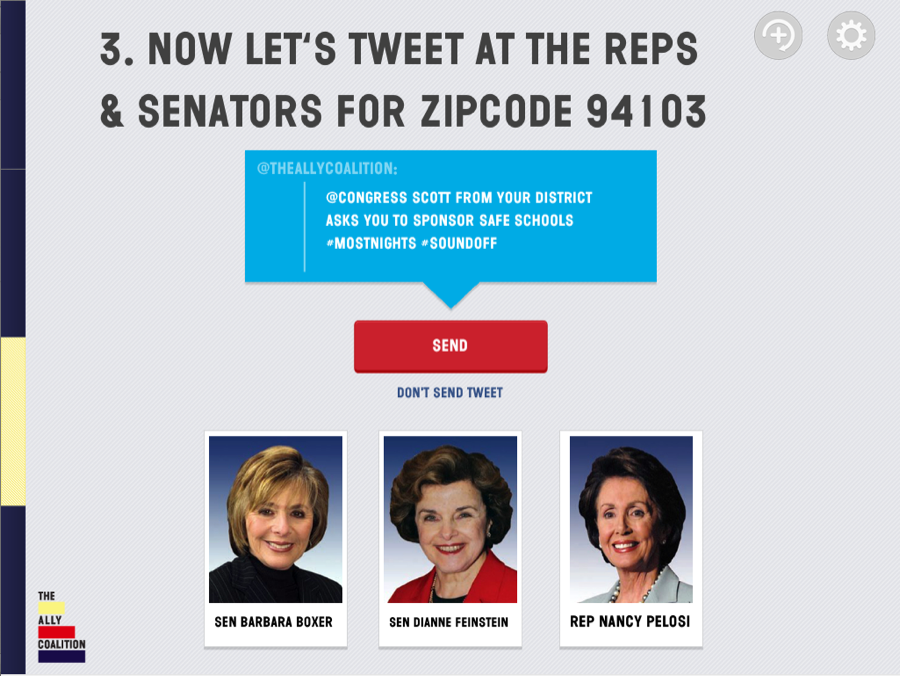
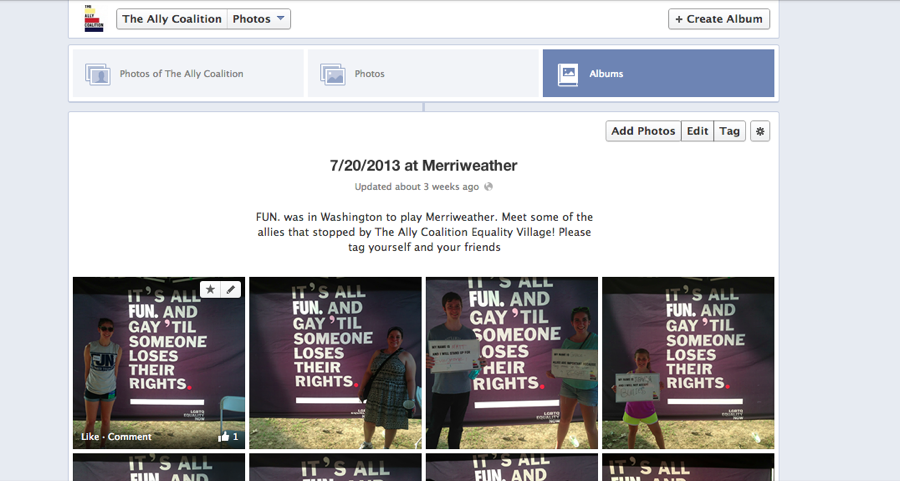
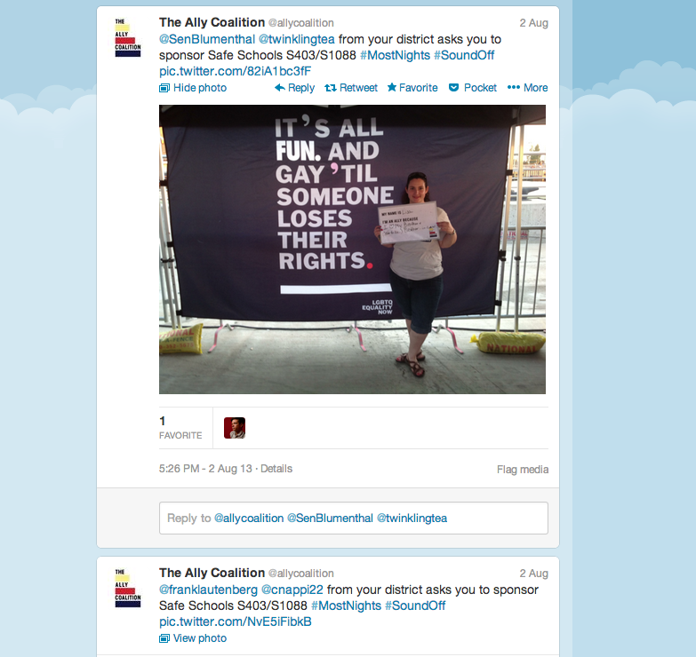
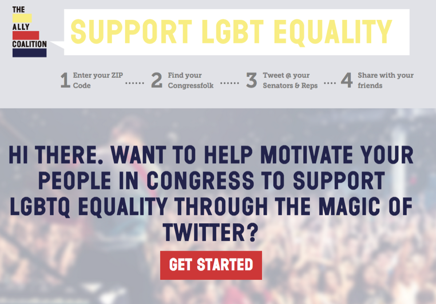

Specimen Nº 18 · Habitat III — The early internet & client work
The Ally Coalition
Recruiting fans at FUN. concerts for the cause of equality - with The Ally Coalition.
- First observed
- 2013
- Design
- Noah Manger
Created a custom iPad app built to go on tour with the band FUN. At every stop, volunteers set up and man the equality village. When fans visit - they get their photo taken with a sign describing why they're supporting equality. Their name, email, zip code, and twitter handle are collected by in the app and linked to the photo. Finally, the app gives them a quick peek at their legislators and the message they'll be sending to them.
After the show - the photos are synced to the Ally Coalition's facebook account, the emails are saved to their CRM, and automatic replies are sent out urging fan to contact their legislators personally and to find their photos on facebook. Tweets are also sent to their elected officials from The Ally Coalition's twitter account - with the photo and mentioning the fan if they provided their twitter information.
A designed web version of the form also exists, allowing users to sign up and take action online from The Ally Coalition's website. Also provides an analytics back-end for The Ally Coalition to login and photos and signups.
The iPad app was built as a native app and is written in Objective C, the server which facilitates syncing, is built on Rails and uses Amazon S3 storage and upload, with hosting from Heroku. Congressional lookup information is provided by Open Congress API and the Google Maps API. All tweets are marked with #SoundOff, allowing for tweet aggregation by #SoundOff.
Plates · from the field






Field notes